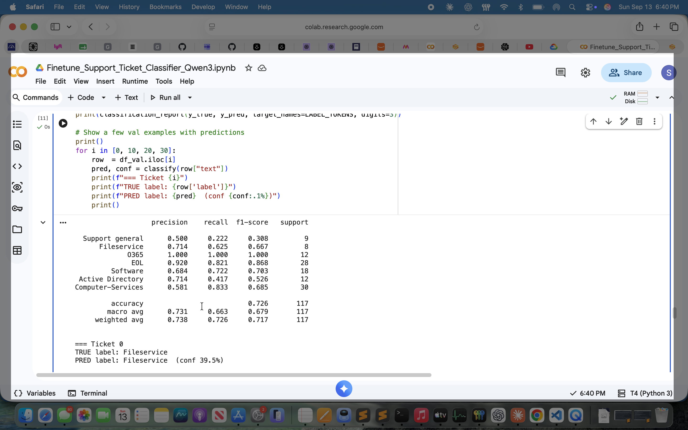
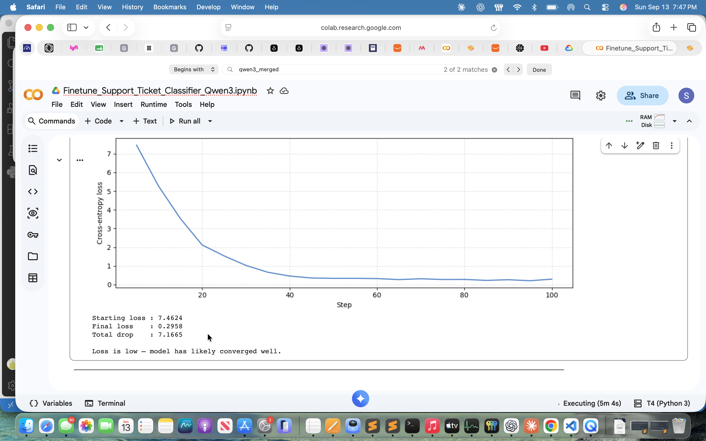
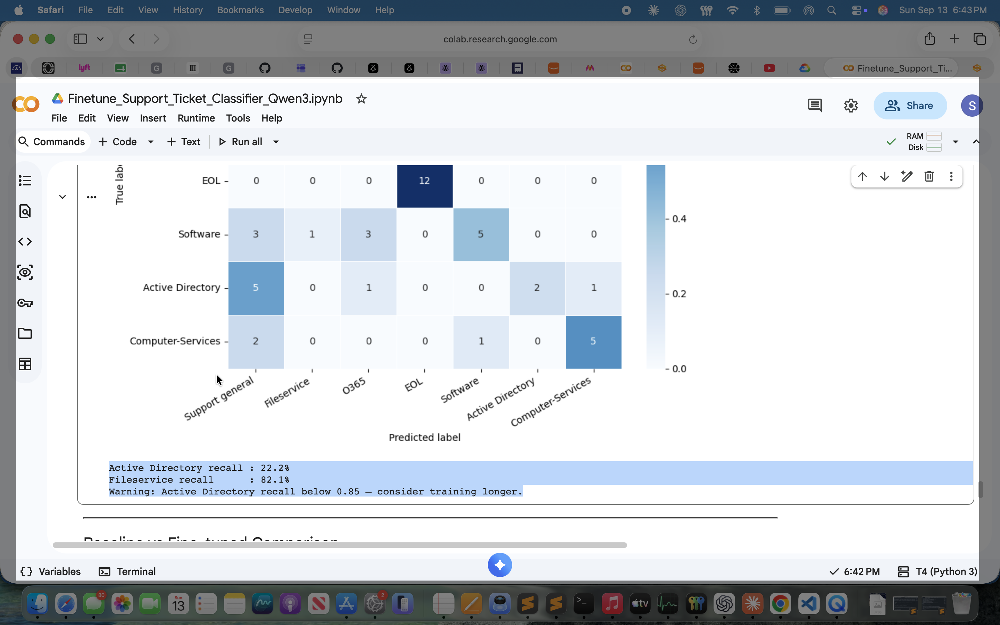
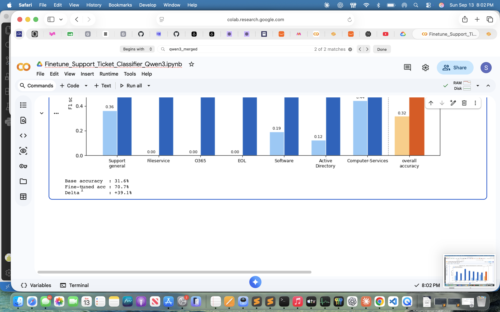
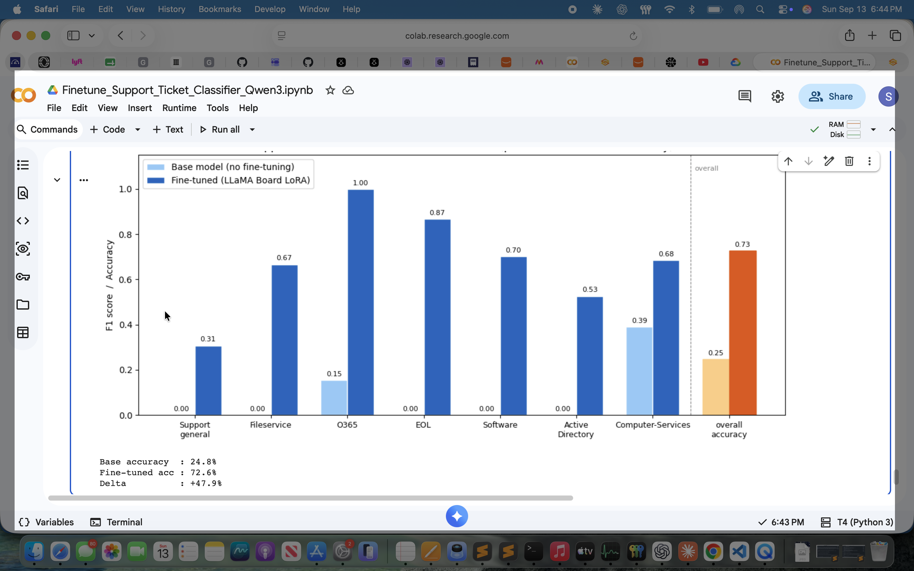
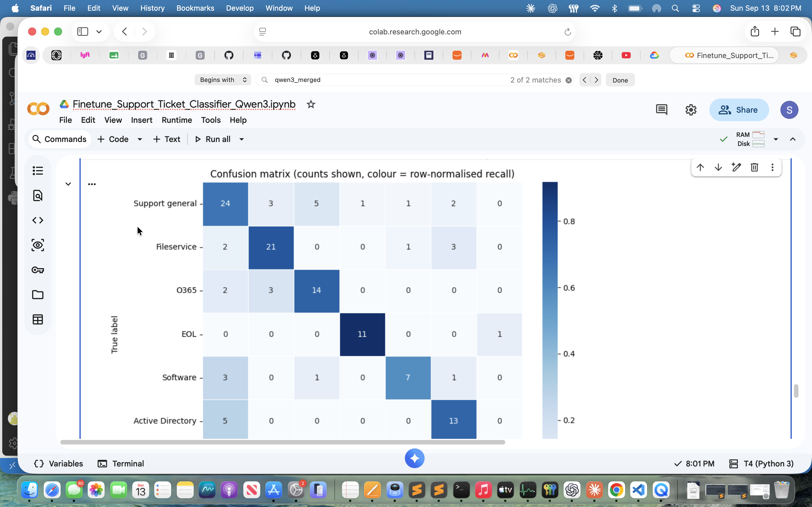
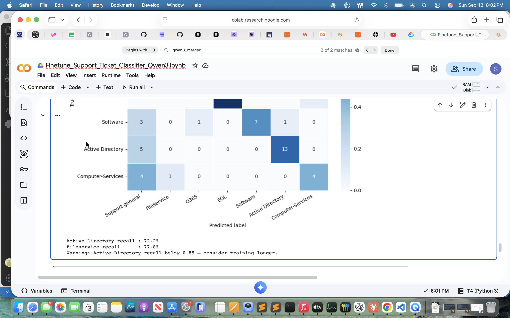

Fine-Tune a Support Ticket Router
Turn Qwen3 1.7B into a small, practical IT support-ticket classifier using LoRA.
Speaker notes | Opening
Hi, this is my Week 5 project: a fine-tuned Qwen3 1.7B support-ticket router. This is from the pre-defined track. It reads an IT ticket, predicts one of seven queue labels, and routes it; it does not write a customer response.
The goal is to fine-tune the base model and evaluate performance.
Prepare the labeled tickets
| Step | Result |
|---|---|
| Input | support_tickets.csv |
| Split | Stratified 80/20 train and validation split |
| Training file | 529 rows registered as support_tickets in LLaMA Factory |
| Held-out validation | 133 rows saved to /content/val_split.csv |
| Dataset refinement | Corrected labels and added examples for Active Directory, Support general, O365, Software, and Computer-Services |
Speaker notes | Dataset Preparation
The pre-defined track came with a labeled CSV. The dataset is registered with LLaMA Factory. After reviewing the first results, I corrected labels and added examples for Active Directory and Support general as they did not perform well in the first iteration. The final dataset has 662 rows: 529 for training and 133 held out for validation.
Train with LoRA
Qwen3 was trained through LLaMA Board on a Tesla T4. The base model stayed frozen while a small adapter learned the routing task.
Parameter changes: iteration 1 to iteration 2
| Parameter | Iteration 1 | Iteration 2 | Purpose |
|---|---|---|---|
| Learning rate | 5e-5 | 2e-5 | More conservative updates |
| LoRA rank | 8 | 16 | More adapter capacity |
| LoRA dropout | 0 | 0.05 | Light regularization |
| Cutoff length | 2048 | 512 | Short tickets use less memory |
| Warmup ratio | None | 0.05 | Gentler start |
| Compute type | bf16 | fp16 | Matches the T4 GPU |
| Unchanged | Epochs 3, batch size 2, gradient accumulation 8, max gradient norm 1.0, cosine scheduler | ||
Speaker notes | Fine-Tuning
As per the pre-defined track, I trained with LoRA through LLaMA Board on a Tesla T4. The base model stayed frozen while a small adapter learned the routing task. I completed two iterations. In the latest run, loss fell from 7.4624 to 0.2958 and leveled off, indicating convergence.
For the second run, I changed the learning rate from 5e-5 to 2e-5, increased LoRA rank from 8 to 16, added 0.05 LoRA dropout, reduced cutoff length from 2048 to 512, added a 0.05 warmup ratio, and changed compute type from bf16 to fp16 for the T4 GPU.
Check convergence and prepare inference
Latest training loss
What happened next
- Merged the LoRA adapter into the base model.
- Saved a standalone model checkpoint.
- Ran smoke tests for account creation, shared-folder access, Outlook, server retirement, and software installation.
Speaker notes | Merge and Evaluation Fix
After training, I merged the adapter into the base model and ran smoke tests for account creation, shared-folder access, Outlook, server retirement, and software installation.
I also corrected the evaluation code. Reports, F1 charts, and confusion-matrix rows and columns now use one explicit category order. Safe normalization handles empty classes, preventing metrics from appearing under the wrong names.
How did the model perform?
Fine-tuned accuracy: 70.7%
Improvement: +39.1 percentage points
Macro F1: 0.710
| Category | Precision | Recall | F1 | Support |
|---|---|---|---|---|
| Support general | 0.600 | 0.667 | 0.632 | 36 |
| Fileservice | 0.750 | 0.778 | 0.764 | 27 |
| O365 | 0.700 | 0.737 | 0.718 | 19 |
| EOL | 0.917 | 0.917 | 0.917 | 12 |
| Software | 0.778 | 0.583 | 0.667 | 12 |
| Active Directory | 0.684 | 0.722 | 0.703 | 18 |
| Computer-Services | 0.800 | 0.444 | 0.571 | 9 |
Speaker notes | Evaluation
In terms of evaluation, the base model scored 31.6% accuracy. The fine-tuned model scored 70.7%, an improvement of 39.1 percentage points. Macro F1 was 0.710. EOL was strongest at 91.7% recall; Active Directory reached 72.2% and Fileservice 77.8%. Computer-Services was weakest at 44.4% recall.
Where are the mistakes?
| True \\ Predicted | Support general | Fileservice | O365 | EOL | Software | Active Directory | Computer-Services |
|---|---|---|---|---|---|---|---|
| Support general | 24 | 3 | 5 | 1 | 1 | 2 | 0 |
| Fileservice | 2 | 21 | 0 | 0 | 1 | 3 | 0 |
| O365 | 2 | 3 | 14 | 0 | 0 | 0 | 0 |
| EOL | 0 | 0 | 0 | 11 | 0 | 0 | 1 |
| Software | 3 | 0 | 1 | 0 | 7 | 1 | 0 |
| Active Directory | 5 | 0 | 0 | 0 | 0 | 13 | 0 |
| Computer-Services | 4 | 1 | 0 | 0 | 0 | 0 | 4 |
Strongest: EOL recall at 91.7%. Needs attention: Computer-Services recall at 44.4%.
Final conclusion
Speaker notes | Closing
Overall, fine-tuning was successful and substantially outperformed the base model. Next, I would evaluate both iterations on the same fixed test set and add clearer Computer-Services and Software examples.
Thank you.
Before and after: training results
These are the actual Colab screenshots from the repository's screenshots folder, mapped chronologically: 6:40–6:44 PM is Iteration 1; 7:47–8:11 PM is Iteration 2.
Iteration 1 | Training loss

Iteration 2 | Training loss

Iteration 1 | Baseline comparison

Iteration 2 | Baseline comparison

Iteration 1 | Confusion matrix

Iteration 2 | Confusion matrix


Iteration 1 values
Iteration 2 values
| Comparison | Iteration 1 | Iteration 2 |
|---|---|---|
| Fine-tuned accuracy | 72.6% | 70.7% |
| Gain over base | +47.8 points | +39.1 points |
| Interpretation | Higher measured accuracy on a different split | Lower accuracy, but better macro F1 balance |
Speaker notes | Iteration comparison
These are the actual notebook screenshots. The first group, from 6:40 to 6:44 PM, is Iteration 1. The second group, from 7:47 to 8:11 PM, is Iteration 2.
In the first run, loss fell from 7.1462 to 0.1880, with 72.6% fine-tuned accuracy compared with 24.8% for the base model.
In the second run, loss fell from 7.4624 to 0.2958, with 70.7% fine-tuned accuracy compared with 31.6% for the base model. The second run's macro F1 was higher, 0.710 versus 0.679, suggesting more balanced performance. Because the validation sets changed, this is not a perfectly controlled head-to-head comparison.